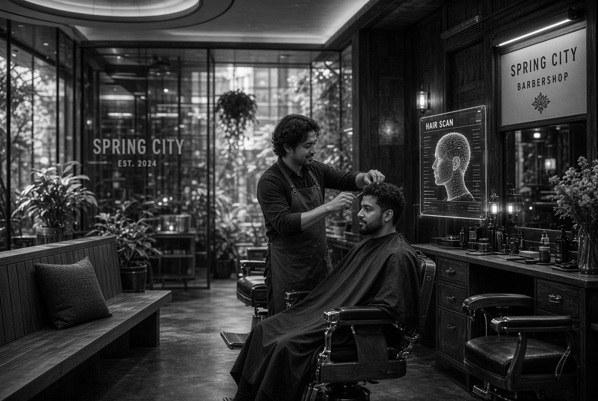

Una visión de Neighbors · Spring City, PA
Barberos en el año 2040
Las máquinas siguen sonando. La conversación sigue importando más que la técnica. Sigues saliendo pareciéndote a ti — solo más definido.
Bajas de la acera
La puerta reconoce el ritmo de tu paso antes de que llegues a la manija. No porque una cámara te mire. Porque la barbería ya aprendió quiénes son de aquí.
Adentro, la luz es el mismo ámbar de siempre. La banca sigue siendo la banca. Alguien ya habla del partido de anoche, o del niño que acaba de aprender a andar en bici, o de cómo se ve el río al anochecer. Nadie mira una pantalla. Se miran entre ellos.
Te sientas. La silla sabe la altura exacta que te gusta. La capa cae con un peso conocido. Un momento no pasa nada. Luego el barbero te mira — de verdad — y dice tu nombre como si hubiera estado esperando esta conversación.
El escaneo que recuerda
Un pulso suave de luz cruza el cuero cabelludo. No es un láser. Se parece más a cómo el sol encuentra el filo de una navaja. En menos de un segundo la barbería sabe la densidad de cada folículo, hacia dónde crece, dónde el último corte dejó peso de más, y dónde el pelo ha raleado desde la última vez.
También sabe la historia que le has contado. Que dejaste crecer el pelo después de la boda. Que pediste un poco más de largo arriba la semana en que tu padre estaba en el hospital. Que siempre quieres la nuca limpia, pero nunca demasiado alta.
Nada de esto vive en una nube. Vive en la silla, en las herramientas, en las manos que llevan veinte años con la misma máquina. La tecnología solo es una memoria hecha precisa. El juicio sigue siendo humano.
Precisión sin adivinar
Cada línea sigue el hueso de abajo. El fade no “se ve más o menos bien”. Está bien — porque las herramientas ya saben dónde curva tu cabeza y dónde no.
Un pelo que aprende contigo
La fórmula del frasco cambia con la estación, con el estrés en tu voz, con los minerales del agua que bebes. No porque lo decidiera una computadora. Porque el barbero lo notó, y la barbería le ayudó a recordarlo.
La vista previa en la que puedes confiar
Antes de que caiga un pelo, ves el corte terminado en el espejo — no una caricatura, sino cómo va a pegar la luz cuando salgas a la tarde. Si no te gusta, lo dices. La silla se ajusta. El plan cambia. Sigues al mando.
El corte que sigue tomando tiempo
Las herramientas son más silenciosas. Algunas ni tocan la piel hasta la última pasada. Pero las manos siguen siendo manos. Se detienen cuando empiezas una historia. Cambian el ángulo porque lo sintieron, no porque un sensor se lo dijera.
En 2040 los mejores barberos no son los que tienen más sensores. Son los que saben cuándo ignorar los datos. Los que oyen la diferencia entre “quiero algo nuevo” y “necesito sentirme yo otra vez”.
Las máquinas siguen sonando. Ese sonido no cambió. Es el sonido de alguien que está atento.
Cuando cae la capa, el espejo muestra una versión de ti que parece inevitable. Como si el pelo siempre hubiera debido quedar así. La tecnología hizo perfecta la ejecución. La persona en la silla hizo que la decisión importara.
Lo que no cambia
Todavía puedes sentarte en la banca aunque no vengas a cortarte. Los niños siguen pasando después de la escuela. Alguien sigue trayendo café. El dueño sigue sabiendo quién prefiere la silla de la ventana y quién quiere quedarse callado con sus pensamientos.
En 2040 el barrio sigue necesitando un lugar que no te pida gastar para pertenecer. La barbería sigue siendo ese lugar. Las herramientas se hicieron más listas. La bienvenida se quedó igual.
Justin abrió Neighbors porque quería la barbería en la que creció en Brooklyn — esa donde la gente se quedaba más tiempo que la cita. Esa idea no caduca. Solo gana mejores herramientas.
El futuro del corte no es un robot. Es una persona que sabe tu nombre, recuerda lo último que dijiste, y tiene instrumentos lo bastante precisos para igualar el cuidado que ya tenía.
Ven a ver el principio
Nada de esto es ciencia ficción. La base ya está aquí: la atención, la constancia, el lugar que se siente de la gente que entra por la puerta.
Reserva el corte que existe hoy. Siéntate. Cuenta la historia. Cuando llegue 2040, la barbería ya va a saber cómo cuidarte — porque empezó a aprender en 2026.
Neighbors Barbershop · 105 N. Main Street · Spring City, PA